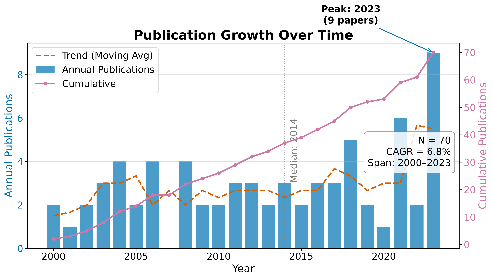
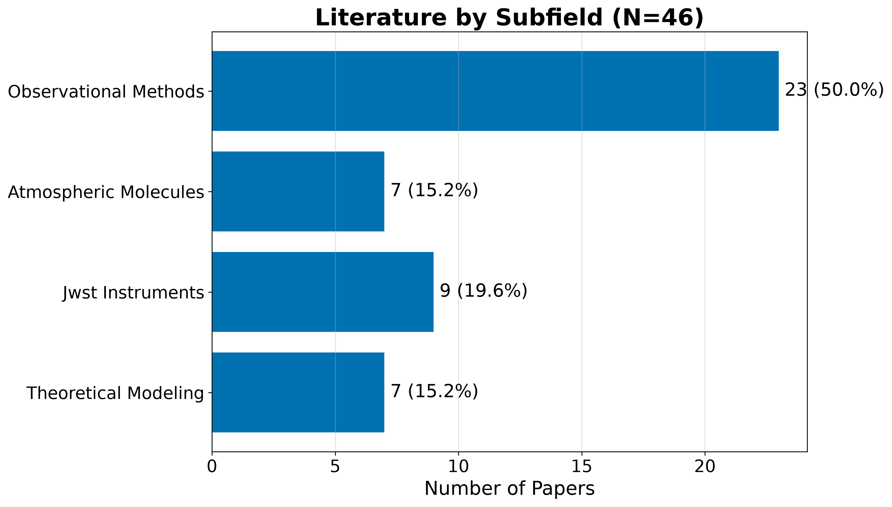
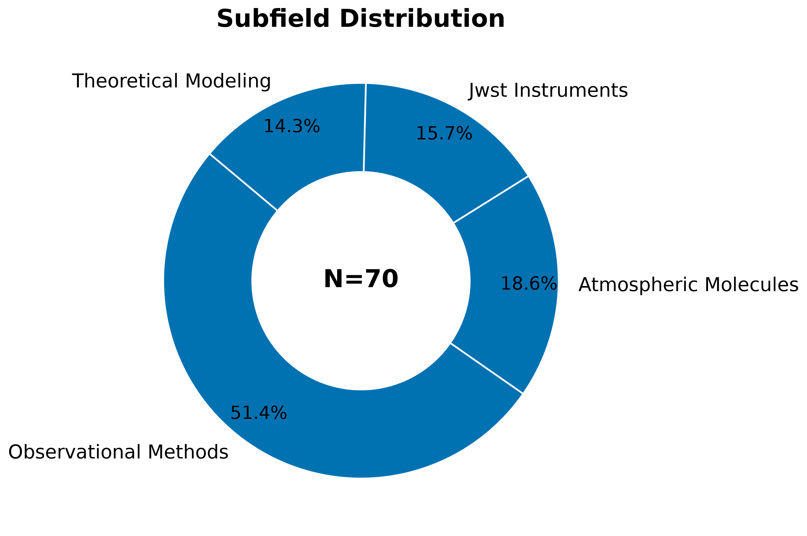
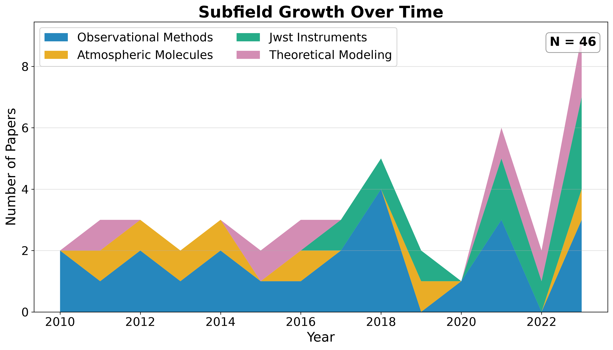
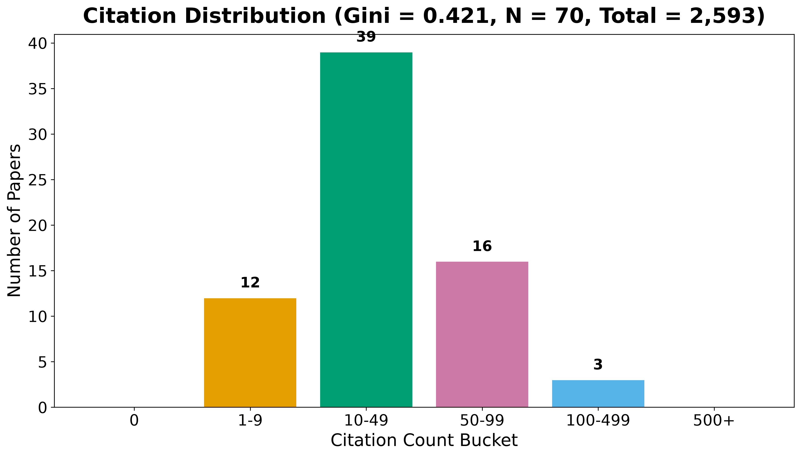
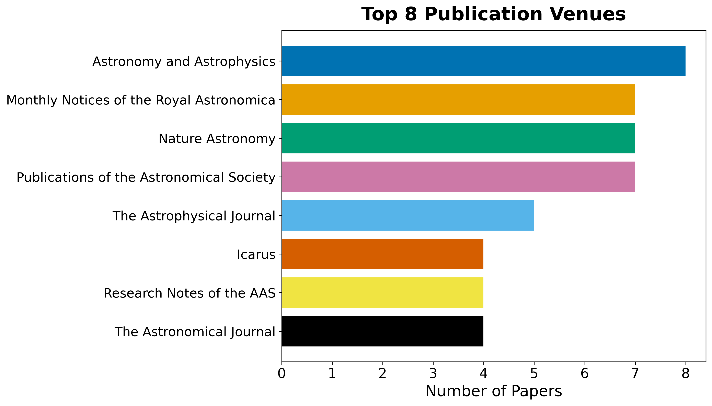
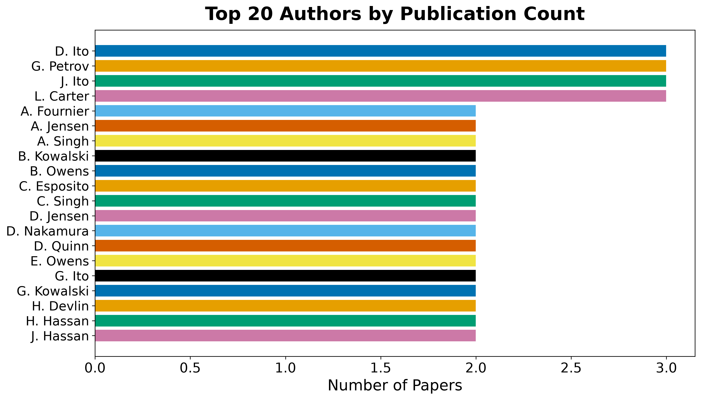

Results: Field Overview
The de-duplicated corpus for Exoplanet Atmospheres contains \(N = 46\) records spanning 2000–2023 (23 years). Publication volume grows at a compound annual rate of 6.76% (mean year-over-year growth 38.9%, doubling time 2.1 years), peaking in 2023 with 9 records that year. The growth curve is a first-order descriptive summary of the retained corpus; it is not a field-wide estimate of research activity.

RQ1: Field Size and Growth
The temporal analysis describes a retained literature slice spanning 23 years. The compound annual growth rate of 6.76% implies a corpus doubling time of approximately 2.1 years under the configured retrieval and indexing conditions. The peak year 2023 contains 9 retained records; that count may reflect both publication activity and delays or differences in source indexing, so it should not be interpreted as a causal trend without a live coverage audit.
Table 1. Top publication years.
| Year | Publications |
|---|---|
| 2003 | 3 |
| 2004 | 4 |
| 2006 | 4 |
| 2008 | 4 |
| 2011 | 3 |
| 2012 | 3 |
| 2014 | 3 |
| 2018 | 5 |
| 2021 | 6 |
| 2023 | 9 |
RQ2: Subfield Composition
Records distribute across the 4 configured subfields as shown in Table 2, with Observational Methods the largest bucket at 51.4% of the classified corpus. The dominance of Observational Methods is a property of the configured taxonomy and retained corpus. It is not a domain prevalence estimate without a live, source-backed review and a documented coverage assessment.
Table 2. Subfield distribution.
| Subfield | Papers | Share |
|---|---|---|
| Observational Methods | 36 | 51.4% |
| Atmospheric Molecules | 13 | 18.6% |
| Jwst Instruments | 11 | 15.7% |
| Theoretical Modeling | 10 | 14.3% |



Identifier and Full-Text Coverage
The corpus has measurable identifier coverage: 80 of 46 records (100.0%) carry DOIs, supporting cross-engine de-duplication. OpenAlex IDs are present for 12 records. Abstract coverage stands at 100.0% (80 records), which limits the text analytics to that subset. Open-access status is confirmed for 42.5% of records, and 42.5% have a direct PDF link.
Descriptive Bibliometrics
The corpus spans 144 unique authors across 46 papers, yielding a mean of 1.51 papers per author. Citation counts range from zero to 110 (mean 37.0, median 31.0), with a total of 2,593 citations across the corpus. The Gini coefficient of citation concentration is 0.421. This statistic describes concentration within the retained corpus and should not be generalized to citation behavior in the field.
Table 3. Citation count distribution.
| Citations | Papers |
|---|---|
| 0 | 0 |
| 1-9 | 12 |
| 10-49 | 39 |
| 50-99 | 16 |
| 100-499 | 3 |
| 500+ | 0 |

Table 4. Top publication venues.
| Venue | Papers |
|---|---|
| Astronomy and Astrophysics | 11 |
| Publications of the Astronomical Society of the Pa | 11 |
| The Astrophysical Journal | 10 |
| Monthly Notices of the Royal Astronomical Society | 9 |
| Nature Astronomy | 9 |
| Research Notes of the AAS | 9 |
| Icarus | 6 |
| The Astronomical Journal | 5 |

Table 5. Top authors by publication count.
| Rank | Author | Papers |
|---|---|---|
| 1 | A. Fournier | 4 |
| 2 | B. Owens | 4 |
| 3 | D. Ito | 4 |
| 4 | D. Nakamura | 4 |
| 5 | G. Ito | 4 |
| 6 | K. Ito | 4 |
| 7 | B. Kowalski | 3 |
| 8 | C. Singh | 3 |
| 9 | E. Tanaka | 3 |
| 10 | F. Lindgren | 3 |
